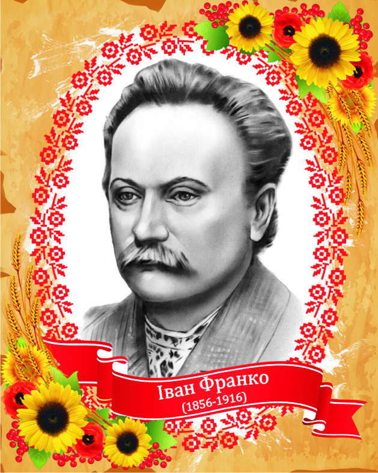
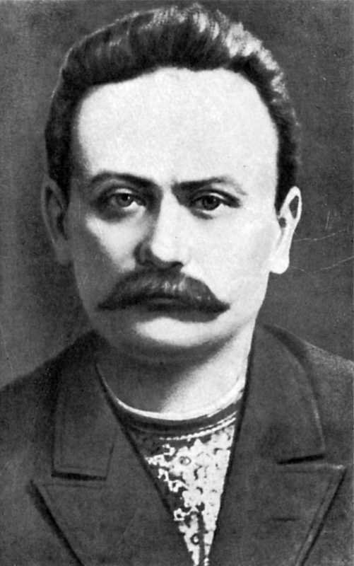
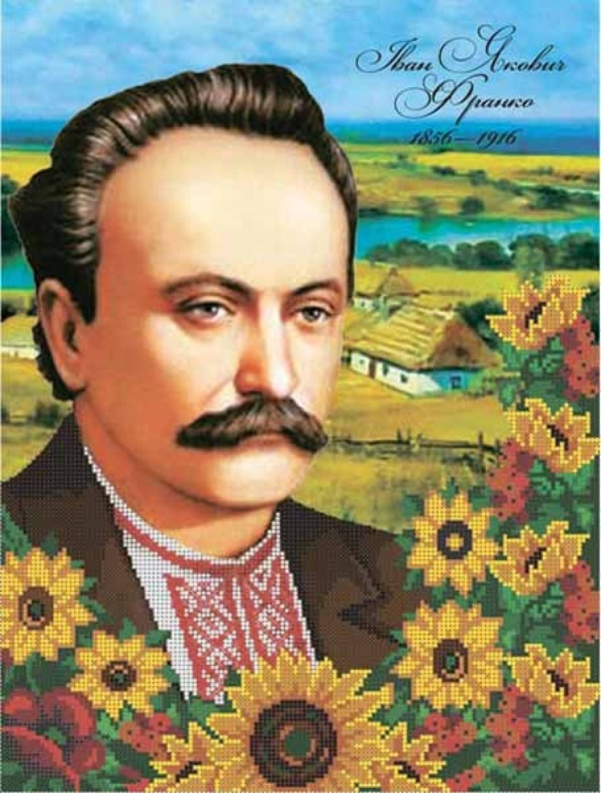

  
Іван Якович Франко народився 27 серпня 1856р. у підгірському виселку Нагуєвичі Дрогобицького повіту в родині сільського коваля.
Вчився він у сільській школі, спочатку в Нагуєвичах, а потім у Ясениці Сільній, у Губичах; з 1864 по 1867 рік — у Дрогобицькій школі василіян, а далі у гімназії, яку закінчив 1875р.
Його батько, Яків Іванович, помер, коли І. Франкові було лише близько одинадцяти років. Саме про смерть батька у 1871р. Франко написав свій перший вірш. Вітчим добре поставився до свого пасинка і дав йому змогу продовжувати навчання. Та невдовзі у молодого гімназиста померла і мати (1872 року), яку він дуже любив і присвятив їй свої згадки у вірші "Пісня і праця" (1883р.), у поемі "Гадки на межі" (1881p.).
І після смерті матері Івана Франка вітчим, одружившись вдруге, не змінив свого ставлення до пасинка і допомагав йому продовжувати навчання. 26 липня 1875 року Іван Франко закінчує Дрогобицьку гімназію і одержує атестат зрілості.
Вже з дитячих років "Кобзар" Т. Шевченка став його улюбленою книгою. В гімназії Франко глибоко цікавиться і знайомиться з літературою польською, німецькою, французькою, з латинськими класиками.
Влітку 1874 року І. Франко подорожує вперше самостійно по Підкарпаттю (Лолин, Тур'я, Волосенки і т. д.) і робить фольклорні записи, а восени 1875 року вступає на філософський факультет Львівського університету.
Ще гімназистом він друкує свої перші літературні твори в студентському університетському журналі у Львові "Друг". Вступивши до студентського "Академічного гуртка", Франко став активним працівником і автором його органу "Друг": вміщує поезії, переклади, друкує першу велику повість "Петрії і Довбущуки", з особливим запалом знайомиться з російською революційно-демократичною літературою, друкує в "Друзі" (1877р.) переклад роману М. Чернишевського "Что делать?", перекладає вірші Пушкіна "Ворон к ворону летит" та "Русалка", що ввійшли в першу збірку поезій "Баляди і росказы" (1876р.).
Доноси галицьких реакціонерів спричинилися до першого арешту І. Франка та членів редакції журналу "Друг". Після звільнення з тюрми (він просидів у тюрмі майже 8 місяців до суду, а засуджений був на 6 тижнів арешту) І. Франко, що був до того "соціалістом по симпатії, як мужик", включається в соціалістичний і робітничий рух Галичини, стає на шлях активної боротьби з австрійською монархією, з носіями соціального і національного гніту в ній.
Разом з М. Павликом І. Франко починає видавати журнал "Громадський друг", у якому друкує свої вірші "Товаришам із тюрми", нарис "Патріотичні пориви", початок повісті "Boa constrictor". Коли ж поліція конфіскувала журнал (після другого номера), назву журналу було змінено на "Дзвін". Тут Франко друкує свій знаменитий програмний вірш "Каменярі" та оповідання "Моя стріча з Олексою". Четвертий — останній номер журналу вийшов під назвою "Молот". В ньому закінчив І. Франко друкування повісті "Boa constrictor", сатиричний вірш "Дума про Наума Безумовича", свою знамениту статтю "Література, її завдання і найважніші ціхи". Він студіює праці К. Маркса і Ф. Енгельса, перекладає розділ "Капіталу" та розділи з "Анти-Дюрінга" для видання їх окремими брошурами, пише передмови до цих брошур.
На початку 90-х років виходять збірка поезій "Із днів журби" (1900р.), повість "Перехресні стежки" (1900р.) та інші.
З 1898 року у Львові починає виходити журнал "Літературно-науковий вісник".
Збірки Івана Франка